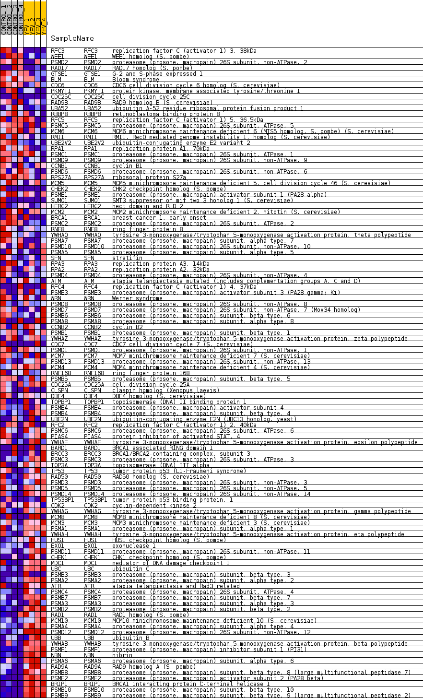
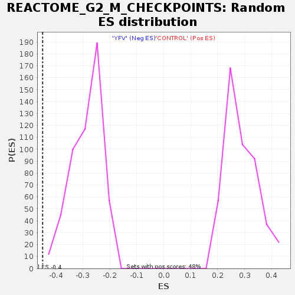

Profile of the Running ES Score & Positions of GeneSet Members on the Rank Ordered List
| Dataset | MATRIZ_GSE99081_collapsed_to_symbols.gsea_CLASE_99081.cls#CONTROL_versus_YFV |
| Phenotype | gsea_CLASE_99081.cls#CONTROL_versus_YFV |
| Upregulated in class | YFV |
| GeneSet | REACTOME_G2_M_CHECKPOINTS |
| Enrichment Score (ES) | -0.44874746 |
| Normalized Enrichment Score (NES) | -1.5794251 |
| Nominal p-value | 0.0 |
| FDR q-value | 0.07592805 |
| FWER p-Value | 0.977 |
| SYMBOL | TITLE | RANK IN GENE LIST | RANK METRIC SCORE | RUNNING ES | CORE ENRICHMENT | |
|---|---|---|---|---|---|---|
| 1 | RFC3 | replication factor C (activator 1) 3, 38kDa | 159 | 1.141 | 0.0148 | No |
| 2 | WEE1 | WEE1 homolog (S. pombe) | 558 | 0.801 | 0.0074 | No |
| 3 | PSMD2 | proteasome (prosome, macropain) 26S subunit, non-ATPase, 2 | 711 | 0.738 | 0.0140 | No |
| 4 | RAD17 | RAD17 homolog (S. pombe) | 918 | 0.669 | 0.0156 | No |
| 5 | GTSE1 | G-2 and S-phase expressed 1 | 936 | 0.665 | 0.0290 | No |
| 6 | BLM | Bloom syndrome | 1072 | 0.624 | 0.0341 | No |
| 7 | CDC6 | CDC6 cell division cycle 6 homolog (S. cerevisiae) | 1376 | 0.555 | 0.0273 | No |
| 8 | PKMYT1 | protein kinase, membrane associated tyrosine/threonine 1 | 1578 | 0.513 | 0.0259 | No |
| 9 | CDC25C | cell division cycle 25C | 1757 | 0.500 | 0.0257 | No |
| 10 | RAD9B | RAD9 homolog B (S. cerevisiae) | 1941 | 0.492 | 0.0250 | No |
| 11 | UBA52 | ubiquitin A-52 residue ribosomal protein fusion product 1 | 1969 | 0.488 | 0.0338 | No |
| 12 | RBBP8 | retinoblastoma binding protein 8 | 2482 | 0.415 | 0.0111 | No |
| 13 | RFC5 | replication factor C (activator 1) 5, 36.5kDa | 2905 | 0.352 | -0.0075 | No |
| 14 | PSMC5 | proteasome (prosome, macropain) 26S subunit, ATPase, 5 | 3127 | 0.329 | -0.0141 | No |
| 15 | MCM6 | MCM6 minichromosome maintenance deficient 6 (MIS5 homolog, S. pombe) (S. cerevisiae) | 3196 | 0.320 | -0.0114 | No |
| 16 | RMI1 | RMI1, RecQ mediated genome instability 1, homolog (S. cerevisiae) | 3345 | 0.304 | -0.0140 | No |
| 17 | UBE2V2 | ubiquitin-conjugating enzyme E2 variant 2 | 3392 | 0.300 | -0.0104 | No |
| 18 | RPA1 | replication protein A1, 70kDa | 3464 | 0.292 | -0.0085 | No |
| 19 | PSMC1 | proteasome (prosome, macropain) 26S subunit, ATPase, 1 | 3697 | 0.267 | -0.0171 | No |
| 20 | PSMD9 | proteasome (prosome, macropain) 26S subunit, non-ATPase, 9 | 3732 | 0.263 | -0.0135 | No |
| 21 | CCNB1 | cyclin B1 | 3893 | 0.251 | -0.0180 | No |
| 22 | PSMD6 | proteasome (prosome, macropain) 26S subunit, non-ATPase, 6 | 3986 | 0.243 | -0.0184 | No |
| 23 | RPS27A | ribosomal protein S27a | 4134 | 0.232 | -0.0225 | No |
| 24 | MCM5 | MCM5 minichromosome maintenance deficient 5, cell division cycle 46 (S. cerevisiae) | 4252 | 0.224 | -0.0250 | No |
| 25 | CHEK2 | CHK2 checkpoint homolog (S. pombe) | 4320 | 0.218 | -0.0244 | No |
| 26 | PSME1 | proteasome (prosome, macropain) activator subunit 1 (PA28 alpha) | 4391 | 0.212 | -0.0242 | No |
| 27 | SUMO1 | SMT3 suppressor of mif two 3 homolog 1 (S. cerevisiae) | 4461 | 0.206 | -0.0240 | No |
| 28 | HERC2 | hect domain and RLD 2 | 4500 | 0.202 | -0.0220 | No |
| 29 | MCM2 | MCM2 minichromosome maintenance deficient 2, mitotin (S. cerevisiae) | 4554 | 0.197 | -0.0210 | No |
| 30 | BRCA1 | breast cancer 1, early onset | 4709 | 0.182 | -0.0266 | No |
| 31 | PSMC2 | proteasome (prosome, macropain) 26S subunit, ATPase, 2 | 4826 | 0.173 | -0.0301 | No |
| 32 | RNF8 | ring finger protein 8 | 4844 | 0.171 | -0.0274 | No |
| 33 | YWHAQ | tyrosine 3-monooxygenase/tryptophan 5-monooxygenase activation protein, theta polypeptide | 4910 | 0.165 | -0.0279 | No |
| 34 | PSMA7 | proteasome (prosome, macropain) subunit, alpha type, 7 | 5238 | 0.134 | -0.0453 | No |
| 35 | PSMD10 | proteasome (prosome, macropain) 26S subunit, non-ATPase, 10 | 5332 | 0.127 | -0.0483 | No |
| 36 | PSMA5 | proteasome (prosome, macropain) subunit, alpha type, 5 | 5659 | 0.102 | -0.0663 | No |
| 37 | SFN | stratifin | 5694 | 0.099 | -0.0663 | No |
| 38 | RPA3 | replication protein A3, 14kDa | 5730 | 0.095 | -0.0664 | No |
| 39 | RPA2 | replication protein A2, 32kDa | 6313 | 0.052 | -0.1013 | No |
| 40 | PSMD4 | proteasome (prosome, macropain) 26S subunit, non-ATPase, 4 | 6348 | 0.049 | -0.1024 | No |
| 41 | ATM | ataxia telangiectasia mutated (includes complementation groups A, C and D) | 6415 | 0.044 | -0.1055 | No |
| 42 | RFC4 | replication factor C (activator 1) 4, 37kDa | 6627 | 0.031 | -0.1179 | No |
| 43 | PSME3 | proteasome (prosome, macropain) activator subunit 3 (PA28 gamma; Ki) | 6661 | 0.029 | -0.1194 | No |
| 44 | WRN | Werner syndrome | 6704 | 0.026 | -0.1214 | No |
| 45 | PSMD8 | proteasome (prosome, macropain) 26S subunit, non-ATPase, 8 | 6710 | 0.026 | -0.1212 | No |
| 46 | PSMD7 | proteasome (prosome, macropain) 26S subunit, non-ATPase, 7 (Mov34 homolog) | 6854 | 0.018 | -0.1296 | No |
| 47 | PSMB6 | proteasome (prosome, macropain) subunit, beta type, 6 | 7048 | 0.008 | -0.1414 | No |
| 48 | PSMA8 | proteasome (prosome, macropain) subunit, alpha type, 8 | 9584 | -0.007 | -0.2985 | No |
| 49 | CCNB2 | cyclin B2 | 9733 | -0.013 | -0.3074 | No |
| 50 | PSMB1 | proteasome (prosome, macropain) subunit, beta type, 1 | 9745 | -0.014 | -0.3077 | No |
| 51 | YWHAZ | tyrosine 3-monooxygenase/tryptophan 5-monooxygenase activation protein, zeta polypeptide | 9782 | -0.016 | -0.3096 | No |
| 52 | CDC7 | CDC7 cell division cycle 7 (S. cerevisiae) | 9882 | -0.021 | -0.3153 | No |
| 53 | PSMD1 | proteasome (prosome, macropain) 26S subunit, non-ATPase, 1 | 10102 | -0.030 | -0.3283 | No |
| 54 | MCM7 | MCM7 minichromosome maintenance deficient 7 (S. cerevisiae) | 10398 | -0.051 | -0.3455 | No |
| 55 | PSMD13 | proteasome (prosome, macropain) 26S subunit, non-ATPase, 13 | 10422 | -0.053 | -0.3457 | No |
| 56 | MCM4 | MCM4 minichromosome maintenance deficient 4 (S. cerevisiae) | 10445 | -0.056 | -0.3459 | No |
| 57 | RNF168 | ring finger protein 168 | 10453 | -0.056 | -0.3451 | No |
| 58 | PSMB5 | proteasome (prosome, macropain) subunit, beta type, 5 | 10473 | -0.058 | -0.3450 | No |
| 59 | CDC25A | cell division cycle 25A | 10529 | -0.062 | -0.3471 | No |
| 60 | CLSPN | claspin homolog (Xenopus laevis) | 10611 | -0.068 | -0.3506 | No |
| 61 | DBF4 | DBF4 homolog (S. cerevisiae) | 10722 | -0.077 | -0.3558 | No |
| 62 | TOPBP1 | topoisomerase (DNA) II binding protein 1 | 10764 | -0.081 | -0.3566 | No |
| 63 | PSME4 | proteasome (prosome, macropain) activator subunit 4 | 10799 | -0.085 | -0.3569 | No |
| 64 | PSMB4 | proteasome (prosome, macropain) subunit, beta type, 4 | 10839 | -0.088 | -0.3574 | No |
| 65 | UBE2N | ubiquitin-conjugating enzyme E2N (UBC13 homolog, yeast) | 10897 | -0.094 | -0.3589 | No |
| 66 | RFC2 | replication factor C (activator 1) 2, 40kDa | 10916 | -0.095 | -0.3579 | No |
| 67 | PSMC6 | proteasome (prosome, macropain) 26S subunit, ATPase, 6 | 11010 | -0.102 | -0.3615 | No |
| 68 | PIAS4 | protein inhibitor of activated STAT, 4 | 11172 | -0.118 | -0.3689 | No |
| 69 | YWHAE | tyrosine 3-monooxygenase/tryptophan 5-monooxygenase activation protein, epsilon polypeptide | 11369 | -0.135 | -0.3782 | No |
| 70 | BARD1 | BRCA1 associated RING domain 1 | 11461 | -0.145 | -0.3807 | No |
| 71 | BRCC3 | BRCA1/BRCA2-containing complex, subunit 3 | 11492 | -0.147 | -0.3794 | No |
| 72 | PSMC3 | proteasome (prosome, macropain) 26S subunit, ATPase, 3 | 11528 | -0.149 | -0.3783 | No |
| 73 | TOP3A | topoisomerase (DNA) III alpha | 11607 | -0.156 | -0.3798 | No |
| 74 | TP53 | tumor protein p53 (Li-Fraumeni syndrome) | 11764 | -0.171 | -0.3858 | No |
| 75 | RAD50 | RAD50 homolog (S. cerevisiae) | 11786 | -0.173 | -0.3833 | No |
| 76 | PSMD3 | proteasome (prosome, macropain) 26S subunit, non-ATPase, 3 | 11846 | -0.178 | -0.3831 | No |
| 77 | PSMD5 | proteasome (prosome, macropain) 26S subunit, non-ATPase, 5 | 11911 | -0.185 | -0.3831 | No |
| 78 | PSMD14 | proteasome (prosome, macropain) 26S subunit, non-ATPase, 14 | 11924 | -0.186 | -0.3799 | No |
| 79 | TP53BP1 | tumor protein p53 binding protein, 1 | 12035 | -0.196 | -0.3824 | No |
| 80 | CDK2 | cyclin-dependent kinase 2 | 12173 | -0.211 | -0.3864 | No |
| 81 | YWHAG | tyrosine 3-monooxygenase/tryptophan 5-monooxygenase activation protein, gamma polypeptide | 12483 | -0.242 | -0.4003 | No |
| 82 | MCM8 | MCM8 minichromosome maintenance deficient 8 (S. cerevisiae) | 12540 | -0.249 | -0.3984 | No |
| 83 | MCM3 | MCM3 minichromosome maintenance deficient 3 (S. cerevisiae) | 12723 | -0.268 | -0.4039 | No |
| 84 | PSMA1 | proteasome (prosome, macropain) subunit, alpha type, 1 | 12891 | -0.287 | -0.4080 | No |
| 85 | YWHAH | tyrosine 3-monooxygenase/tryptophan 5-monooxygenase activation protein, eta polypeptide | 13120 | -0.317 | -0.4153 | No |
| 86 | HUS1 | HUS1 checkpoint homolog (S. pombe) | 13323 | -0.341 | -0.4205 | No |
| 87 | EXO1 | exonuclease 1 | 13482 | -0.362 | -0.4225 | No |
| 88 | PSMD11 | proteasome (prosome, macropain) 26S subunit, non-ATPase, 11 | 13564 | -0.374 | -0.4194 | No |
| 89 | CHEK1 | CHK1 checkpoint homolog (S. pombe) | 13807 | -0.413 | -0.4255 | No |
| 90 | MDC1 | mediator of DNA damage checkpoint 1 | 13828 | -0.415 | -0.4178 | No |
| 91 | UBC | ubiquitin C | 14182 | -0.479 | -0.4293 | No |
| 92 | PSMB3 | proteasome (prosome, macropain) subunit, beta type, 3 | 14438 | -0.500 | -0.4343 | No |
| 93 | PSMA2 | proteasome (prosome, macropain) subunit, alpha type, 2 | 14672 | -0.535 | -0.4372 | Yes |
| 94 | ATR | ataxia telangiectasia and Rad3 related | 14732 | -0.550 | -0.4290 | Yes |
| 95 | PSMC4 | proteasome (prosome, macropain) 26S subunit, ATPase, 4 | 14766 | -0.557 | -0.4190 | Yes |
| 96 | PSMB7 | proteasome (prosome, macropain) subunit, beta type, 7 | 14794 | -0.565 | -0.4084 | Yes |
| 97 | PSMA3 | proteasome (prosome, macropain) subunit, alpha type, 3 | 14958 | -0.609 | -0.4054 | Yes |
| 98 | PSMB2 | proteasome (prosome, macropain) subunit, beta type, 2 | 15120 | -0.662 | -0.4010 | Yes |
| 99 | RAD1 | RAD1 homolog (S. pombe) | 15360 | -0.768 | -0.3993 | Yes |
| 100 | MCM10 | MCM10 minichromosome maintenance deficient 10 (S. cerevisiae) | 15366 | -0.771 | -0.3829 | Yes |
| 101 | PSMA4 | proteasome (prosome, macropain) subunit, alpha type, 4 | 15508 | -0.833 | -0.3737 | Yes |
| 102 | PSMD12 | proteasome (prosome, macropain) 26S subunit, non-ATPase, 12 | 15525 | -0.844 | -0.3564 | Yes |
| 103 | UBB | ubiquitin B | 15642 | -0.918 | -0.3438 | Yes |
| 104 | YWHAB | tyrosine 3-monooxygenase/tryptophan 5-monooxygenase activation protein, beta polypeptide | 15679 | -0.948 | -0.3255 | Yes |
| 105 | PSMF1 | proteasome (prosome, macropain) inhibitor subunit 1 (PI31) | 15701 | -0.986 | -0.3055 | Yes |
| 106 | NBN | nibrin | 15723 | -1.007 | -0.2850 | Yes |
| 107 | PSMA6 | proteasome (prosome, macropain) subunit, alpha type, 6 | 15762 | -1.053 | -0.2646 | Yes |
| 108 | RAD9A | RAD9 homolog A (S. pombe) | 15771 | -1.061 | -0.2422 | Yes |
| 109 | PSMB8 | proteasome (prosome, macropain) subunit, beta type, 8 (large multifunctional peptidase 7) | 16014 | -1.655 | -0.2215 | Yes |
| 110 | PSME2 | proteasome (prosome, macropain) activator subunit 2 (PA28 beta) | 16061 | -1.905 | -0.1831 | Yes |
| 111 | BRIP1 | BRCA1 interacting protein C-terminal helicase 1 | 16146 | -2.669 | -0.1307 | Yes |
| 112 | PSMB10 | proteasome (prosome, macropain) subunit, beta type, 10 | 16150 | -2.694 | -0.0726 | Yes |
| 113 | PSMB9 | proteasome (prosome, macropain) subunit, beta type, 9 (large multifunctional peptidase 2) | 16195 | -3.614 | 0.0027 | Yes |

